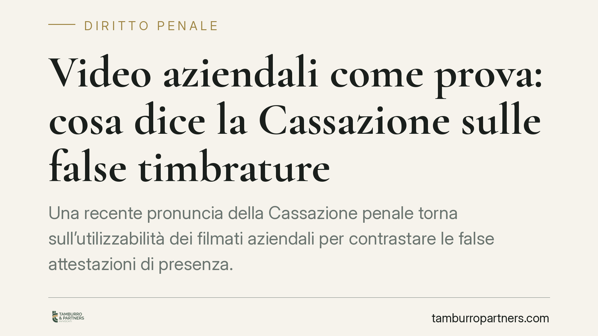

Video aziendali come prova: cosa dice la Cassazione sulle false timbrature
Una recente pronuncia della Cassazione penale torna sull'utilizzabilità dei filmati aziendali per contrastare le false attestazioni di presenza. Il tema tocca due nervi scoperti: i limiti al controllo del datore di lavoro dopo il Jobs Act e la corretta qualificazione penale della condotta del dipendente. Vediamo cosa cambia per imprese e lavoratori.

Il caso
Una recente pronuncia della Cassazione penale (Sez. II; estremi in corso di verifica) ha affrontato l'utilizzabilità, come prova in un procedimento penale, delle riprese effettuate dalle telecamere installate in aree di transito comune di un'azienda. L'obiettivo era dimostrare le false timbrature di alcuni dipendenti: ingressi registrati senza l'effettiva presenza sul posto di lavoro.
Il datore di lavoro era una società per azioni a partecipazione pubblica. Questo dettaglio, apparentemente marginale, incide sulla qualificazione del reato contestato ai lavoratori ed è il punto più delicato della vicenda.
Inquadramento normativo
Sul piano probatorio, il fondamento è l'art. 189 c.p.p., che disciplina la cosiddetta prova atipica: una prova non prevista espressamente dalla legge, ammessa se idonea ad accertare i fatti e se non lede la libertà morale della persona. I video rientrano in questa categoria e possono essere acquisiti al processo penale anche quando siano stati raccolti dal datore di lavoro.
Resta però il filtro dello Statuto dei lavoratori. L'art. 4 St. Lav., riformato dal d.lgs. 151/2015 (Jobs Act), distingue oggi due situazioni. Gli impianti dai quali deriva la possibilità di controllo a distanza dell'attività lavorativa (art. 4, co. 1) richiedono accordo sindacale o autorizzazione amministrativa. Gli strumenti di registrazione degli accessi e delle presenze (art. 4, co. 2) seguono invece un regime più leggero.
A questa disciplina si affianca la categoria, di origine giurisprudenziale, dei controlli difensivi in senso stretto: quelli mirati ad accertare condotte illecite già sospettate, non la generica produttività. In tali casi la Cassazione ha ammesso un margine maggiore, purché il controllo sia proporzionato e successivo all'emersione del sospetto. In ogni caso il trattamento dei dati raccolti deve rispettare il Regolamento UE 2016/679 (GDPR) e il Codice privacy, con adeguata informativa ai lavoratori sulla finalità e sulle modalità della videosorveglianza.
Il secondo nodo riguarda la qualificazione penale. Occorre distinguere con cautela:
- l'art. 640, co. 2, n. 1 c.p. punisce la truffa aggravata quando il danno è arrecato a un ente pubblico;
- l'art. 640-bis c.p. riguarda la truffa per il conseguimento di erogazioni pubbliche (contributi, finanziamenti, sovvenzioni).
La percezione indebita di retribuzione da parte del dipendente di una S.p.A. partecipata non coincide automaticamente con la truffa su erogazioni pubbliche: lo stipendio non è un'erogazione nel senso dell'art. 640-bis. Più coerente appare, a seconda della natura dell'ente danneggiato, il ricorso all'art. 640, co. 2, n. 1 c.p. Inoltre, l'applicabilità ai dipendenti di società partecipate del reato di falsa attestazione della presenza (art. 55-quinquies d.lgs. 165/2001) è tesi dibattuta: quella norma è pensata per il pubblico impiego contrattualizzato, mentre il rapporto di lavoro con una società di capitali segue regole in parte diverse. La soluzione non è pacifica e va argomentata caso per caso.
Implicazioni pratiche
Per il datore di lavoro: i video possono entrare nel processo, ma a monte vanno installati e gestiti nel rispetto dell'art. 4 St. Lav. e della normativa privacy. Un controllo raccolto in violazione di queste regole rischia di esporre l'azienda a responsabilità e di indebolire la posizione processuale.
Per il lavoratore: la falsa timbratura può integrare un reato, ma la fattispecie concreta dipende dalla natura del datore e dalla condotta. Non ogni timbratura irregolare equivale alla medesima imputazione, e la qualificazione incide su pena e prescrizione.
Cosa fare in concreto
- Verifica la base giuridica della videosorveglianza: accertati che esista accordo sindacale o autorizzazione amministrativa ove richiesti dall'art. 4, co. 1 St. Lav.
- Predisponi un'informativa privacy chiara: indica finalità, aree riprese, tempi di conservazione e destinatari dei dati, in linea con il GDPR.
- Documenta il sospetto preesistente se intendi qualificare il controllo come difensivo in senso stretto: annota data ed elementi da cui è sorto.
- Non dare per scontata la qualificazione penale: fatti assistere per valutare se ricorra l'art. 640, co. 2, n. 1 c.p. o altra fattispecie, evitando contestazioni inadeguate.
- Conserva i filmati in modo integro e tracciabile, per garantirne l'affidabilità come prova e la correttezza della catena di custodia.
Disclaimer
Contributo informativo a cura di Tamburro & Partners - Avv. Giuseppe Tamburro. Non costituisce parere legale.
Ogni condominio ha una storia a sé.
Se gestisci un'amministrazione e vuoi un confronto su una specifica questione condominiale, scrivi allo studio. Ti rispondiamo entro un giorno lavorativo.